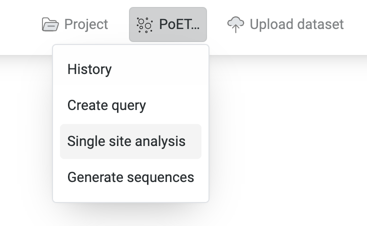
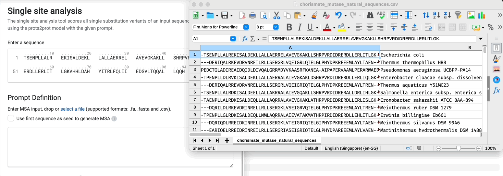
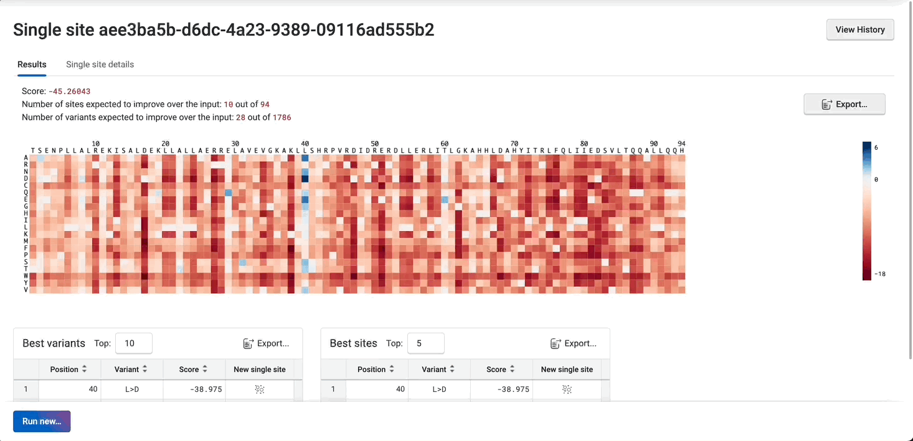
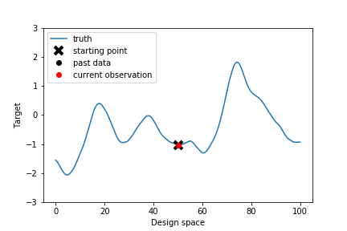
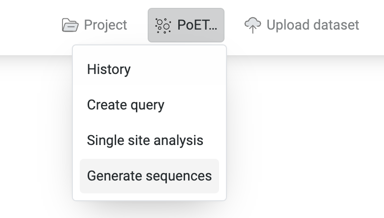
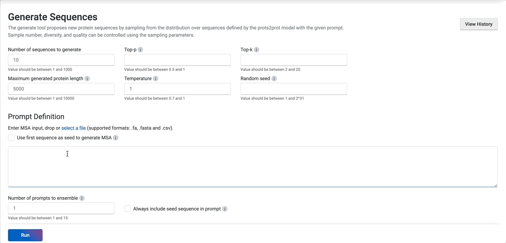
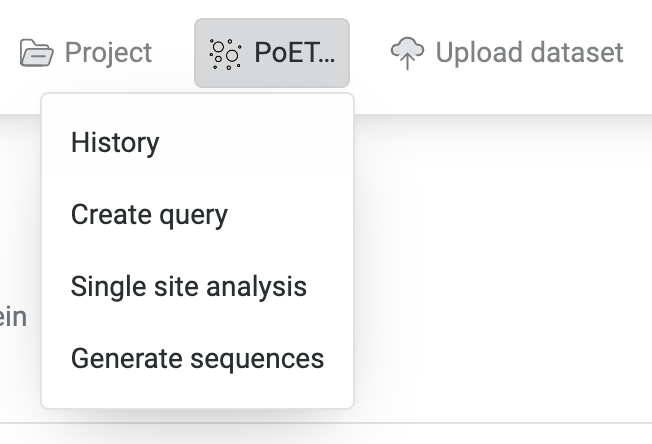
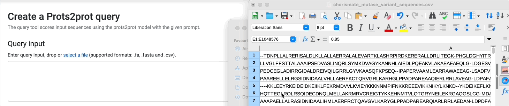
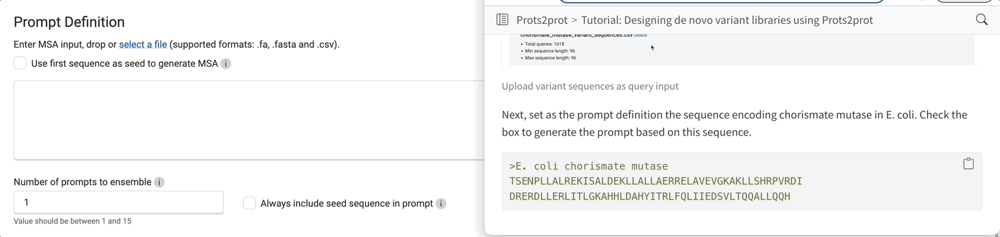
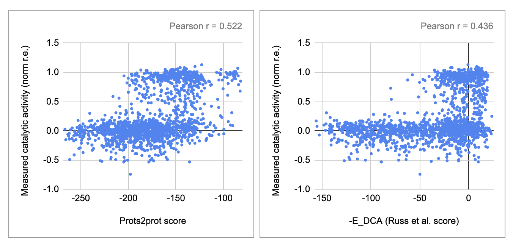

Tutorial: Designing de novo variant libraries using PoET
PoET is a generative protein language model that allows you to design protein sequences de novo, without functional measurements of your protein of interest. This means that you can use the model to generate single substitution, combinatorial variant libraries, or a bespoke high-diversity library, prior to making any measurements.
PoET controls sequence generation via a prompt, which is defined as a set of sequences that encodes information about the local fitness landscape and co-evolutionary patterns of your given protein of interest. One way to build this prompt is by using a multiple sequence alignment (MSA) of your protein of interest using sequences across evolutionary lineages. Because these sequences share an evolutionary relationship, they contain information about the local fitness landscape of the protein. PoET is able to infer the evolutionary process driving the generation of these sequences, and hence not only sample new sequences, but also score the likelihood of seeing a given sequence under this process.
Chorismate mutase is a important enzyme involved in the biosynthesis of aromatic amino acids. Specifically, it catalyzes the conversion of chorismate to prephenate. In this tutorial, we will use PoET to generate a prospective de novo variant library for chorismate mutase.
Generating single-substitution libraries
To generate single-substitution libraries, we can use the Single site analysis prediction tool. This tool generates and scores all single-substitution variants of the given query sequence.

First, define the query sequence for which we wish to generate all single substutions.
Next, define the prompt. Recall that this is a set of sequences that implicitly describe the local fitness landscape of your protein of interest. The easiest way to do this is to paste the same query sequence and simply ask the tool to automatically generate the MSA from it. Here, our query sequence is the sequence encoding chorismate mutase in E. coli.
>E. coli chorismate mutase
TSENPLLALREKISALDEKLLALLAERRELAVEVGKAKLLSHRPVRDI
DRERDLLERLITLGKAHHLDAHYITRLFQLIIEDSVLTQQALLQQH
Alternatively, if you already have an MSA or some other set of sequences that you wish to use as the prompt, you can also drop or select your own file.

And that’s all we need for the analysis! Click Run at the bottom of the page to generate and score all single site variant libraries. There are several other advanced options that we may want to play with after our initial run. However, the default options have been tuned to generate a reasonable starter library.
When the run is complete, navigate to the Result tab to inspect the output of the run. At the top of the page is a summary detailing the score for the query sequence, as well as the number of sites and number of variants expected to improve over the input. The full results are presented as a heatmap, which you can mouse over for more detail. For convenience, the tables at the bottom of the page list the top 5 variants and sites.
The score assigned by PoET is the log likelihood of the sequence under the model. This means that the larger (less negative) the score, the higher the probability of observing the sequence given the model.
As we can see, position 40 seems like a promising candidate for mutagenesis, with many mutations such as L>D, L>E and L>A all improving over the query sequence.

The full results are available for export either as a csv or as a png. To do so, you can use the export button located at the top right hand corner of the page. Alternatively, you can also start a new single-site run against the same prompt either by selecting a particular variant sequence in the heatmap or in the table. Then, start a new single site analysis using Run new....

Congratulations! You have now created your first de novo variant library using PoET!
Generating high-diversity libraries
Why should we care about generating high-diversity libraries? The typical strategy in protein engineering is to search the local sequence space near a known sequence by generating single and combinatorial variant libraries. However, this may not be the best strategy for several reasons:
You may not have a good starting sequence. In this case, you will want to cast your net as wide as possible by sampling a variety of stable and functional proteins. However, you still don’t want to be generating biologically impossible proteins.
You started with an ok sequence, but are stuck in a local optima. This means that there may be distant sequences that have even higher activity. However, these either cannot be found via a simple greedy optimization strategy, or may take an unreasonable number of steps to reach it.

- You want to hedge your bets. Unfortunately, similar sequences are likely to share other possibly unwanted, but correlated properties. For example, a set of similar sequences may all have high activity but may also all be unstable or poorly expressed. Just as with investing, it is good to diversity your portfolio.
To generate high-diversity libraries, we can use the Generate sequences tool.

As in the single-site analysis tool, we have to specify the prompt. We will again use the sequence for chorismate mutase in E. coli. to seed the MSA. Since chorismate mutase is a relatively short protein, we will set the maximum generated protein length to 200. We also set the number of sequences to generate to 100. Hitting run then dispatches the generate job.
>E. coli chorismate mutase
TSENPLLALREKISALDEKLLALLAERRELAVEVGKAKLLSHRPVRDI
DRERDLLERLITLGKAHHLDAHYITRLFQLIIEDSVLTQQALLQQH
Navigate to the Result tab to take a look at the generated sequences. Recall that the larger (less negative) the score, the higher the likelihood of the sequence under the model. We can use the table widget to filter our sequences to have some minimum score, and then export them for further analysis.

However, looking at the table, we can already observe that only 1 sequence has a score higher than the original query sequence that we input in the original analysis. To generate more highly-scoring sequences, we might want to lower Top-p, which reduces the randomness of the sampling by only sampling from the top most likely amino acids up to the specified cumulative frequency. We can also lower the temperature, which emphasizes higher probability amino acids during sampling by raising the probability to the power of the temperature.
Let’s try setting Top-p to 0.9! Here we can see that there are a lot more high-scoring sequences.

Hover the tooltips to learn about how the different parameters affect the results! Although we have set reasonable defaults for many of these parameters, we recommend that you also try playing around with them to customize your libraries.
How good are my libraries?
To evaluate Prot2prot, we can take a look at how well Prot2prot’s likelihood scores correlate with actual activity measurements. If Prot2prot’s scores are predictive, this gives us confidence that the model has learned the underlying generative process and will be able to generate a good library.
An excellent question! Well, it turns out that evolution has already done a lot of the work for us, and that there is a lot to learn from naturally occurring sequences. In fact, our experiments show that even though PoET does not use any measurement information, PoET scores correlate with functional measurements across diverse tasks in a wide variety of datasets. You can read more about these experiments in our upcoming preprint.
Let’s evaluate Prot2prot’s scores against actual activity measurements for chorismate mutase. We will be using a dataset of artificial variant sequences of chorismate mutase that were designed by Russ et al. (2020). In their work, Russ et al. designed these variant sequences using an evolutionary generative model, and then measured their catalytic activity.
To evaluate query sequences against a given MSA, we can use the Create query tool.

First, provide the set of variant sequences that you wish score as the query input. The app expects the input in the form of a headerless csv file with the sequences in the first column. You can either download the raw data from supplementary table 2 in the paper and munge it yourself, or use the pre-formatted version provided here. Note that the activity measurement column is the last column (“norm r.e.”). This is the normalized relative enrichment score that measures chorismate mutase catalytic activity as reported by their assay.
https://drive.google.com/uc?export=download&id=1vYIjxEq_JUSwgkAcpAED9kzTvi_8euzu

Next, set as the prompt definition the sequence encoding chorismate mutase in E. coli. Check the box to use this sequence to automatically build the MSA. We will also set the number of prompts to ensemble to 3.
>E. coli chorismate mutase
TSENPLLALREKISALDEKLLALLAERRELAVEVGKAKLLSHRPVRDI
DRERDLLERLITLGKAHHLDAHYITRLFQLIIEDSVLTQQALLQQHEnsembling more prompts improves prediction performance and reduces stochasticity from the prompt sampling. However, increasing the ensemble number has diminishing returns, while also taking longer to run. In general, we recommend using 3-5.

Now click run, and voila! After a few moments, we can review the predicted scores in the Result tab.
Comparing the PoET likelihood scores to the measured chorismate mutase activity, we find that PoET is extremely predictive (r = 0.522, left) even without having seen any functional measurements. This gives us confidence that high-scoring sequences generated by PoET are good candidates for testing in downstream assays.

When we compare PoET performance against the evolutionary model by Russ et al. (right, r = 0.436), we even find that PoET performs better!
In their work, Russ et al. fit a model that scores and generates sequences specifically for the chorismate mutase family.
PoET generalizes to all families, meaning that in just a few clicks, you can score and generate sequences not only for chorismate mutase, but also for any protein family you are interested in, simply by defining a suitable prompt!